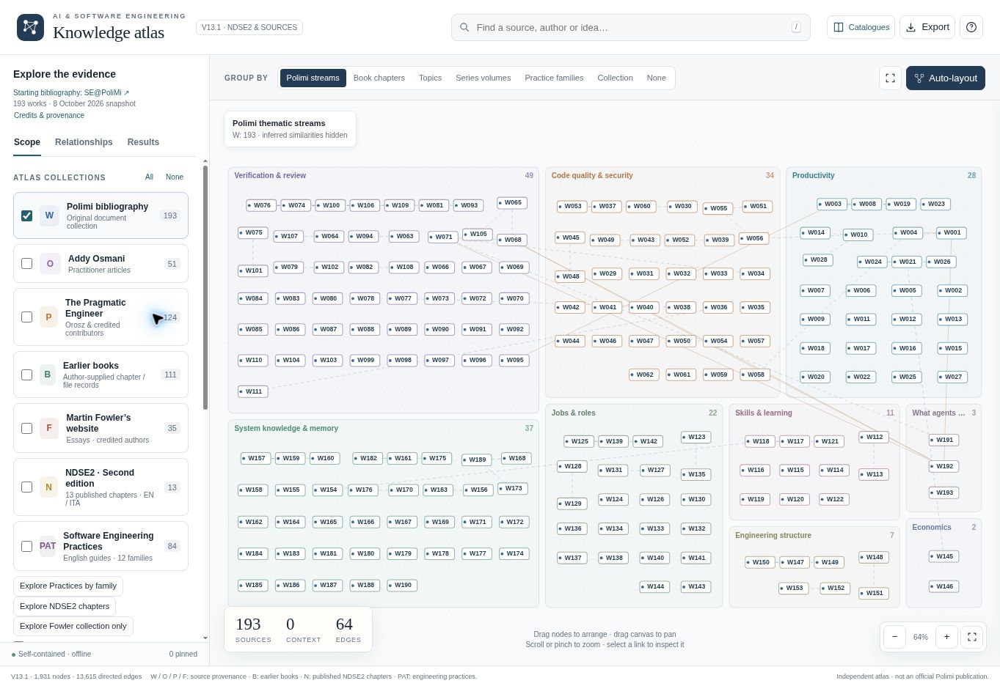
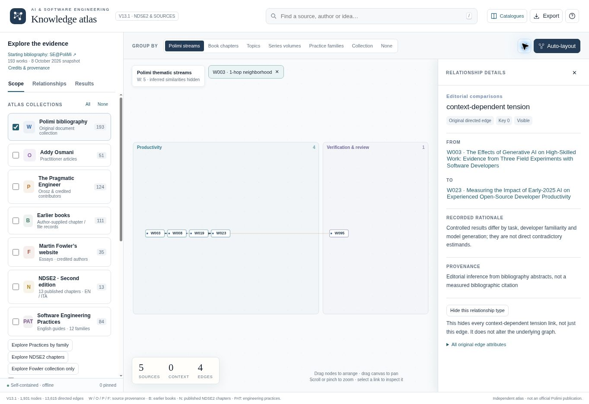
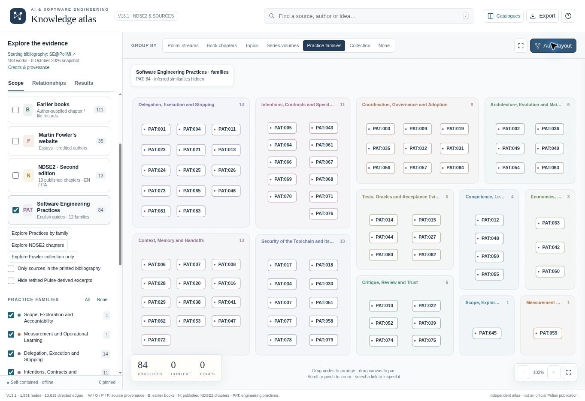
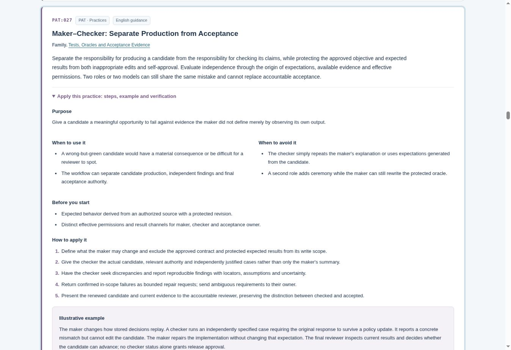
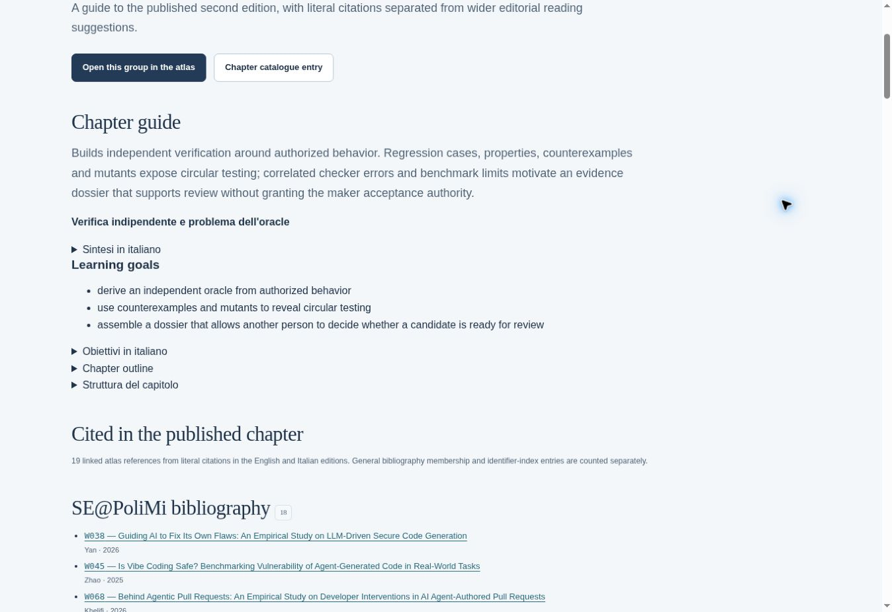

The Map I Built While Writing About AI Coding
An illustrated tour of the research and practices behind my second edition
Two studies sit close together in my knowledge graph. One reports more completed development tasks with a coding assistant. The other finds that experienced developers took longer on familiar tasks when they were allowed to use AI.
If you are deciding how your team should work, that is a much more interesting starting point than another promise of a productivity revolution.
The first is a set of corporate field experiments. The second is a randomized study of experienced open-source developers using early-2025 tools. They involve different people, tasks and measures. Reading them together means asking how much either setting resembles your own.
While developing the second edition of Non-Deterministic Software Engineering, I wanted to keep that question close to the writing. How far could I take a finding? What would I need to qualify? Where was I moving from published evidence into my own engineering judgment?
The Knowledge Atlas grew out of that work. The current version, 13.1, connects the research, practitioner writing, book chapters and practical techniques so that readers can follow those questions too.

Keeping the source attached to the claim
A bibliography tells you where a reference came from. When I am working through an argument, I also want to see what else belongs beside it: a study with a different result, a practitioner’s account of the same problem, or a chapter where the idea becomes a concrete engineering choice.
The Atlas starts from the SE@PoliMi annotated bibliography, credited to Alfonso Fuggetta, Damian Andrew Tamburri and Alessandro Margara. Its 193 works and nine overlapping research streams provide the original organization. The independent Atlas adds a way to navigate that material and connects it to other collections.
These include Addy Osmani’s writing, The Pragmatic Engineer, articles from Martin Fowler’s website, and my book material. The individual authors remain credited. A collection tells you where a record comes from; you still need to inspect the kind of evidence it contains.
That matters when writing about AI coding. A controlled experiment, an experience report and a proposed practice can all be useful, but they support different kinds of statements. Putting them on one map makes those distinctions available for inspection.
There are two ways to read the Atlas. The graph helps you follow relationships. The catalogues give you a quieter view with descriptions, evidence boundaries and source links. I use the graph to choose the next thing to examine, then open the record when I want to read properly.
Follow one disagreement
Here is a route you can reproduce in the live graph. It starts with those two productivity studies, identified as W003 and W023.
- Start with the original research collection. If you have been exploring other views, use Reset to original 193 documents in the sidebar.
- Search for W003 and select it in Results. The inspector opens the record and its description.
- Clear the search text, keeping the record selected, then choose 1-hop view. This brings the directly connected records into view.
- In the inspector’s connections, select the context-dependent tension relationship to W023. Read the explanation of that relationship.
- Open the other record and compare the study settings and limits. Follow the recorded source information back to the original research before relying on the result.

The wording on that edge is deliberate. “Context-dependent tension” is an editorial interpretation, with its rationale visible. It does not establish that the papers estimate the same effect or that one invalidates the other.
For an engineering team, the useful questions come next. Are our developers working in a codebase they know well? What does a “completed task” mean here? How much of our effort goes into understanding the request, reviewing the change and getting it safely into production?
In the book, I develop this line of inquiry in Chapter 2, Measuring Productivity from Code to Production. The Atlas lets a reader move back from that discussion to the evidence and examine the qualifications for themselves.
I also pay attention to the origin of apparently separate arguments. A practitioner’s essay and an edited republication of it should not quietly become two independent pieces of support. Following source relationships helps me notice when an idea has travelled farther than its underlying evidence.
When a small change has a long memory
Research comparisons are one part of the work. The other is deciding what an engineer should actually do with a proposed change.
The second edition uses a synthetic approval-routing service as a continuing example. It is a teaching case, with no real money moving through it.
Imagine lowering an approval threshold from €5,000 to €3,000. A new request for €4,000 should now require review. So far, this looks like a small change.
But yesterday the service already handled a €4,000 request under the old policy. If the same request arrives again with the same key and the same canonical payload, the service must preserve the stored decision and its policy version. Replaying an existing decision is different from making a new one.
Changing a constant may satisfy the obvious example while breaking that distinction. A test generated from the changed implementation can even preserve the misunderstanding.
This is where I want a practice to earn its place. “Add more tests” leaves the central question unanswered: where should the expected result come from?
Open a practice and look for the checks
Version 13.1 gives practices their own collection: 84 English guides organized into 12 families. These are operational guides with stated limits. Their presence in the graph does not mean that each has been independently validated as an effective intervention.
In the graph’s Scope sidebar, choose Explore Practices by family. The view groups techniques around concerns such as context and handoffs, delegation, security, and tests and acceptance evidence. This is a useful starting point when you have a problem to solve but no particular source in mind.

For the approval-routing example, open PAT:027, Maker–Checker: Separate Production from Acceptance. Expand Apply this practice: steps, example and verification.
The guide separates the work of producing a candidate from checking its claims and making an acceptance decision. Its instructions ask you to protect the approved contract and expected results, give the checker the actual candidate and independently justified cases, and return concrete failures as bounded repair requests.
Applied to the example, the checker has a case specifying that a replay must retain the original response after the policy changes. The maker can repair the implementation, but cannot make the failure disappear by rewriting that protected expectation. A reviewer then decides whether the candidate and the renewed evidence are sufficient.
I find the limits as useful as the steps. Two model names do not guarantee independent checking. Two roles can share a faulty assumption. A checker with read-only access offers little protection if the maker can still edit the expected answer.

Each guide also includes an illustrative example, checks, expected outputs and related practices. That gives you something specific to discuss with a team: whether you have the prerequisites, what evidence the practice should produce, and how you would notice it failing.
Use View in atlas at the end of a practice to see it inside its collection and family. For sustained reading, return to the catalogue. There is no obligation to do all your thinking inside a moving diagram.
Moving between the book and the evidence
Under Read with the published NDSE2 chapters, follow the link to Chapter 7, Independent Verification and the Oracle Problem. On its catalogue entry, choose Chapter guide and cited sources to open the reading guide shown below. Here, “oracle” means the basis for deciding what the correct result should be. That basis needs an origin outside the candidate’s own observed output.
The chapter guide gives you the summary and learning goals, followed by sources cited in the published chapter. Farther down, it separates those literal citations from broader editorial reading suggestions. You can also expand the citation trace to see the chapter sections associated with the references.

I want that separation to remain visible as the Atlas grows. Adding a useful new article to a chapter’s reading map does not retroactively put a citation into the published book. Likewise, connecting a practice to a chapter explains why they may be worth reading together; it does not turn the practice into a research finding.
For the second edition, the continuing case provides that concrete thread. It makes questions about intentions, verification and acceptance meet the same proposed change. The Atlas provides routes back out to the research and practitioner accounts behind those discussions.
The Atlas developed alongside the work on the book. The fuller English practice guides and their dedicated collection are part of v13.1, expanded after publication. The site can keep evolving while the published edition remains a fixed reference.
Bring one question
You do not need to read the book to use the Atlas. Bring a question from a change you are working on: what should we measure in an AI coding trial, what must a checker know independently, or what would justify stopping an agent?
Search for that idea, keep the active collections small, and inspect a few records. If the view gets crowded, use a one-hop neighbourhood or return to the catalogue. Follow a connection that complicates your initial view, then write down what it changes about your decision.
For the approval-routing example, that might be a very concrete note: before accepting this patch, demonstrate that yesterday’s stored decision survives today’s policy change.
That is the kind of result I want from the Atlas. A reading session should leave me with a clearer question, a more careful claim, or a check I can actually perform.
The Atlas is freely accessible at popoloni.github.io. If you want the connected argument, worked case and exercises, Non-Deterministic Software Engineering, Second Edition is available on Amazon.com.
When you try the map, I would be interested to hear which connection made you reconsider a decision. Those are often the ones worth following.
Screenshots from the live Knowledge Atlas v13.1, captured on 18 October 2026. The Atlas is an independent project; the original SE@PoliMi bibliography and all included sources retain their respective credits.